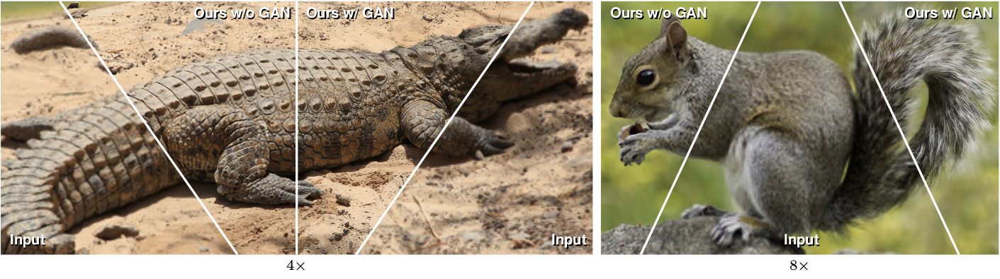
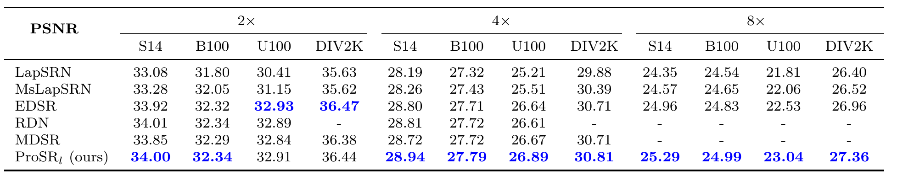

Recent deep learning approaches to single image superresolution have achieved impressive results in terms of traditional error measures and perceptual quality. However, in each case it remains challenging to achieve high quality results for large upsampling factors. To this end, we propose a method (ProSR) that is progressive both in architecture and training. The network upsamples an image in intermediate steps, while the learning process is organized from easy to hard, as is done in curriculum learning. To obtain more photorealistic results, we design a generative adversarial network (GAN), named ProGanSR, that follows the same progressive multi-scale design principle. This not only allows to scale well to high upsampling factors (e.g., 8×) but constitutes a principled multi-scale approach that increases the reconstruction quality for all upsampling factors simultaneously. In particular ProSR ranks 2nd in terms of SSIM and 4th in terms of PSNR in the NTIRE2018 SISR challenge. Compared to the top-ranking team, our model is marginally lower, but runs 5 times faster.


MsLapSRN: Lai, Wei-Sheng, et al. “Fast and Accurate Image Super-Resolution with Deep Laplacian Pyramid Networks.” arXiv preprint arXiv:1710.01992 (2017).
EDSR, MDSR: Lim, Bee, et al. “Enhanced deep residual networks for single image super-resolution.” The IEEE Conference on Computer Vision and Pattern Recognition (CVPR) Workshops. Vol. 1. No. 2. 2017.
RDN:Zhang, Yulun, et al. “Residual Dense Network for Image Super-Resolution.” The IEEE Conference on Computer Vision and Pattern Recognition (CVPR). 2018.
It’s a pleasure to be featured in “2 minute paper”, an amazing YouTube channel that introduces latest development of AI in a variety of applications. Here’s the video that talks about our work.